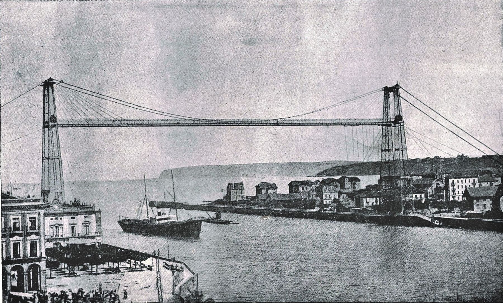
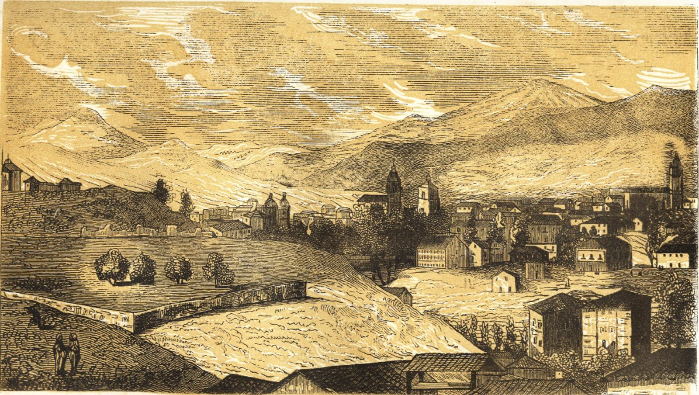
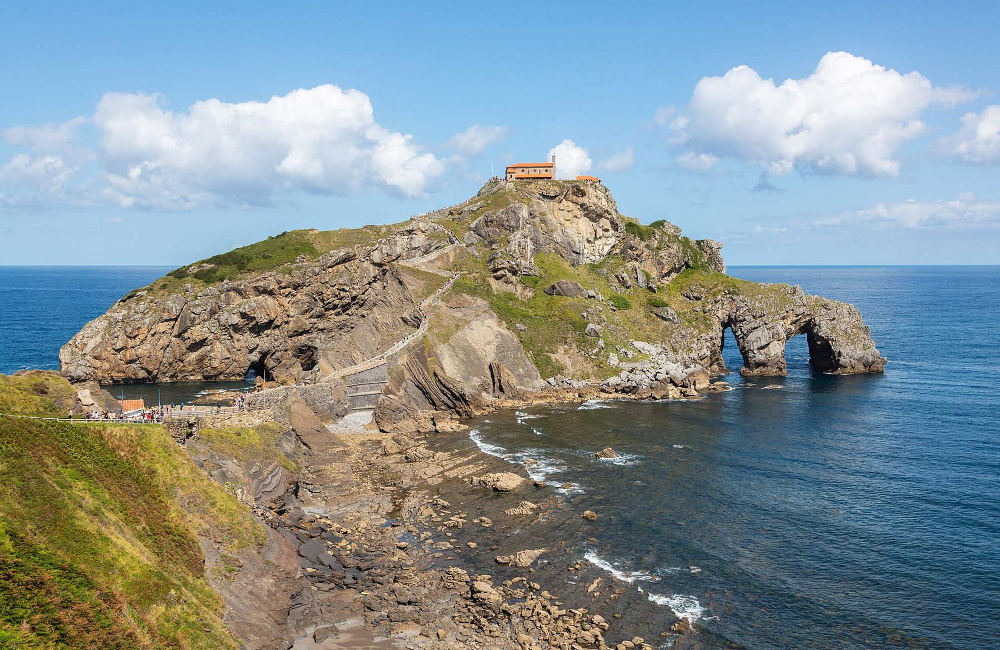
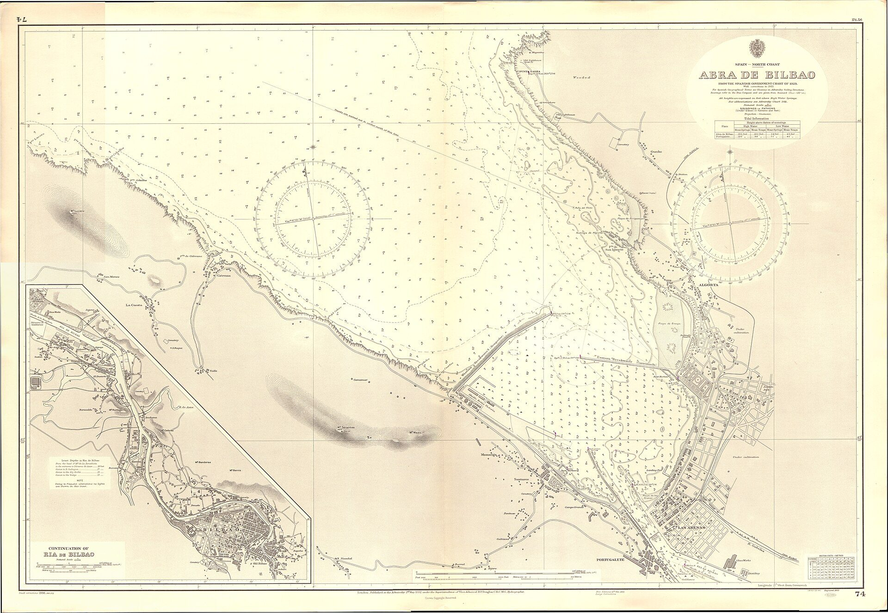
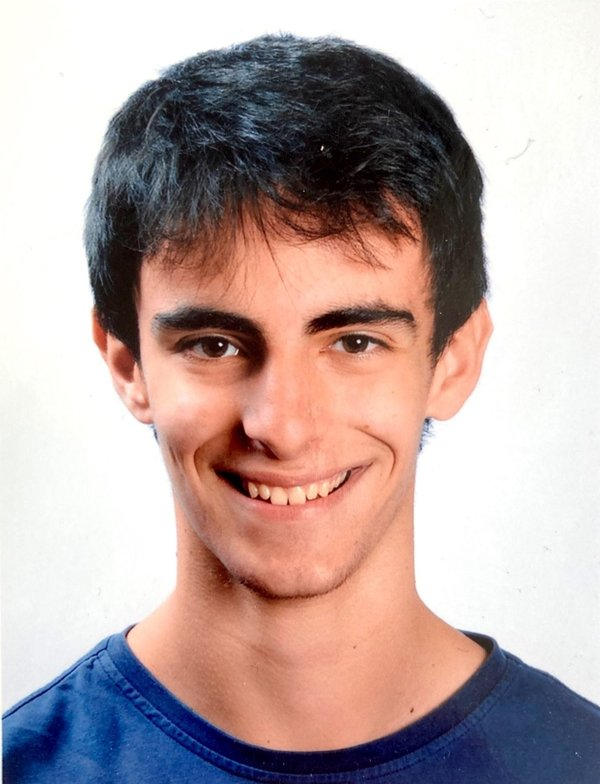

Niri buruz
Josu Bayer naiz, Bizkaiko fisikaria eta ingeniari elektronikoa, fisikaren, softwarearen eta jendearen arteko bidegurutzean lan egiten dudana. UPV/EHUn ikasketa bikoitza egin nuen, eta gero Adimen Artifizialeko eta Hizkuntzaren Teknologiako masterra; gaur egun unibertsitateko IXA taldearekin lan egiten dut, sare sozialetako testuetan arrisku psikologikoaren zantzuak antzematen dituzten ereduetan. Laborategitik kanpo, gauzak antolatzen ditut. 2025ean ENEFeko zuzendarikide izan nintzen, berrehun fisika-ikasleren bost eguneko kongresu nazionalean, eta hogeita hamar bat enpresa eta erakunde publikotatik 80.000 euro baino gehiago lortu nituen. Hiru urtez ZIMATEKeko idazkaria izan nintzen, unibertsitateko RSEF ikasle-taldea sortu nuen, eta orain lau pertsonako talde bat koordinatzen dut, zientzia-esperimentuak ikastetxeetara eramaten. Aisialdian, lagunek eta familiak egunero erabiltzen dituzten aplikazio txikiak egiten ditut.


Ibilbidea
Ikasketak
Ikerketa
Irakaskuntza eta mentoretza

Harremana

